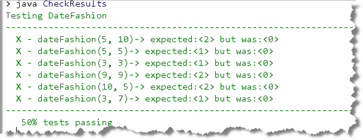
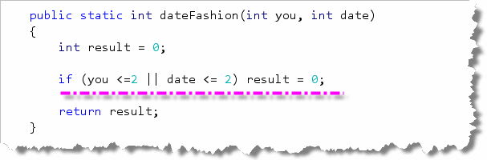
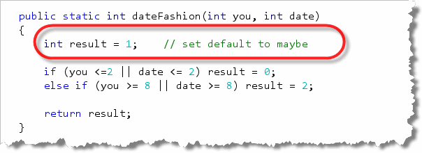

Now, let's look at a problem that requires
you to handle several different branches. In DrJava, open up
DateFashion.java which is part of this chapter's code folder.
For your homework assignment, you'll simulate the thorny problem of
getting a table at a tony restaurant, by writing the function
dateFashion().
Are You Stylish?
 For this problem, you and your date are trying to get a table at
a restaurant. The parameter "you" is the stylishness
of your clothes, in the range 0 to 10, and "date" is
the stylishness of your date's clothes. The result
getting the table is encoded as an int value with 0
meaning no, 1 meaning maybe, and 2 meaning yes.
For this problem, you and your date are trying to get a table at
a restaurant. The parameter "you" is the stylishness
of your clothes, in the range 0 to 10, and "date" is
the stylishness of your date's clothes. The result
getting the table is encoded as an int value with 0
meaning no, 1 meaning maybe, and 2 meaning yes.
If either of you is very stylish, (8 or more), then the result is 2 (definitely a yes!). There's one little exception, though: if either of you has style of 2 or less, then the result is 0 (no). Otherwise the result is 1 (maybe).
Step 1: The Skeleton
Before you get too emotionally wrapped up in whether or not
you're going to get into the restaurant, take a deep breath,
relax, and, just like you've done with every other method,
write the skeleton:
 As with all methods:
As with all methods:
- Start with the header. Since this function will return 0, 1, or 2,
the return type should be
int. Both parameters,youand yourdatewill also beintparameters, since they'll contain the stylishness of your clothes (0..10). - The next step is always to create the return variable. Since
this function returns an
int, create anintvariable namedresultand set it to 0. (That doesn't mean that you're a pessimist, assuming you won't get in; it just means you have to set the default return type to something!) - Finally, to make the function syntactically correct,
you need to end the function with a
returnstatement as shown here.
Now that you've created the skeleton, you can try out the Check
program tests to see what you need to fix:

Wow 50% Of course we only passed for the times we were turned down for a table, so that's kind of depressing.Step 2: Turned Down
It might seem silly to check for a situation where we're turned down, since we already passed all of those tests. However, the other tests really rely on the fact that neither you nor your date have committed a fashion faux-pas.
Here's what the first-pass condition should look like:

Of course, there's no reason testing again, since all the answers are still zero.Step 3: Very Stylish
Now that we've eliminated any chance of getting turned down, though,
we can look at our two remaining options. The easiest to handle is
if we are very stylish. It's important to add this as a "ladder" or
else if statement, and not as another if
or as an else.
Here's the code for this step:
 Now, if you run the tests, you'll see that only the maybe cases
are left:
Now, if you run the tests, you'll see that only the maybe cases
are left:

Step 4: Maybe
Since we've taken care of both the stylish and the "off" days,
it's time to handle the normal case: not too marvelous and not
too dorky, but just right. Since that's everything else,
you don't use else if, but end the multiple-selection
ladder with an else like this:

A Final Refinement
Many of you (like me) are kind of uneasy about first setting and then
re-setting result to 0. After we've finished, you can see that
setting result to the default case (1 or maybe) can actually
make your code a little simple, since it allows you to eliminate
the final else statement like this:

Formatting Options
As I mentioned earlier, you don't need to use braces if
the body of your if statements contains only a
single line. However, if you don't use braces, you should generally
try to keep the statement on one line, as I've done here.
Once you have created the program, compile it and then Check your results. Keep trying until you get a perfect score.